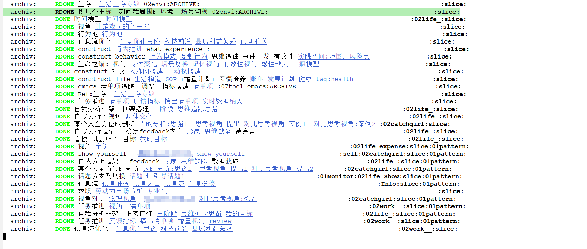

复盘机制
之前写过一个日记模板，挺全的，如下
- [ ]
- [ ]
产出成果
复盘(一句话总结)
今天计划的事有没有做完
有没有分配时间在重要的事上
哪些项目很久没推进了:
手机使用时长:
睡眠时长:
AEIOU:
日志区
这个明显不轻量化，老是忘记看。今天突然有一种感觉，可以把这些指标量化。
第一个，当然是OKR，当前最想做的事是什么，从整个生命周期来看，这件事处在什么位置。这个可以用切片技术做到。

还有两个监控项，除了让事情处在正轨上，我觉得可能要开发更多的视角，比如更多考虑到“我”的感受，什么事情可以让我开心，在这个视角下发掘主动的空间。
复盘的目的是追溯过去和预测未来，用这个切片技术和视角引导，可以夺得更多对生活的掌控权。